Las sabanas son ecosistemas de transición entre los bosques y los desiertos. Se caracterizan por extensas llanuras cubiertas de hierba con pocos árboles dispersos. Son fundamentales para el equilibrio ecológico, ya que albergan una gran diversidad de flora y fauna. Además, son el hogar de algunas de las especies más emblemáticas del planeta.
📍 Ubicacion
Las sabanas se encuentran principalmente en regiones tropicales y subtropicales. Algunas de las más conocidas están en: África (la sabana africana, especialmente en países como Kenia, Tanzania y Sudáfrica) Sudamérica (los Llanos del Orinoco en Venezuela y Colombia, el Cerrado brasileño) Australia También hay zonas de sabana en India y el sureste asiático.

🌤️ Clima
El clima de las sabanas es tropical con dos estaciones bien definidas: Estación seca: con altas temperaturas y poca o ninguna lluvia. Estación lluviosa: con precipitaciones abundantes que permiten el crecimiento de la vegetación. La temperatura suele oscilar entre 20 °C y 30 °C, aunque puede superar los 35 °C durante la estación seca.
🌧️ Precipitaciones
Las sabanas reciben entre 800 y 1.500 mm de lluvia al año, concentradas principalmente en la temporada húmeda. Fuera de esa época, las lluvias son escasas o inexistentes, lo que limita el crecimiento de árboles y favorece la vegetación herbácea.
 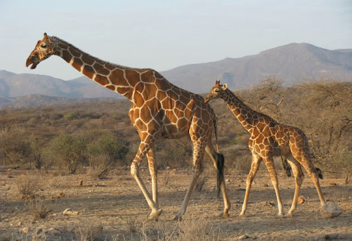
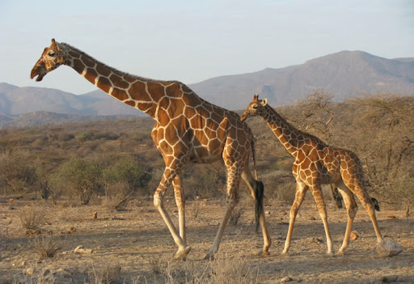
 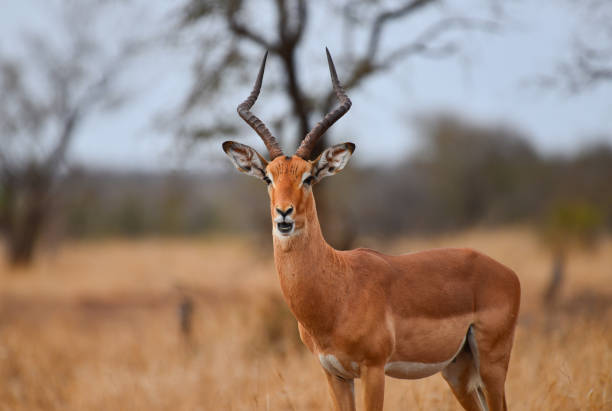
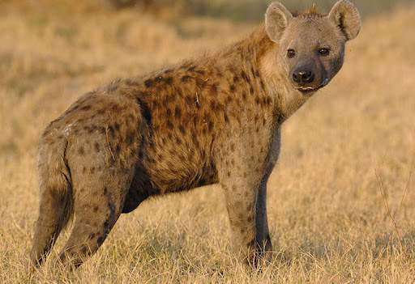
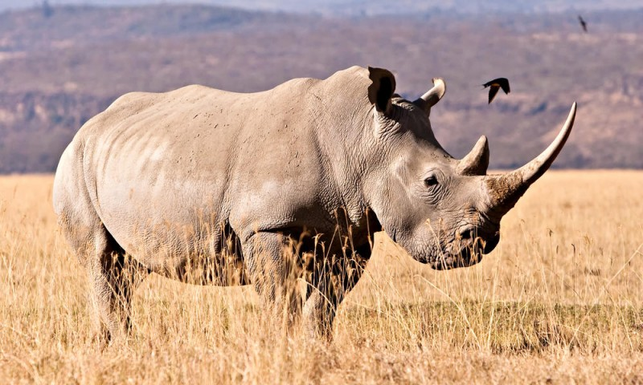
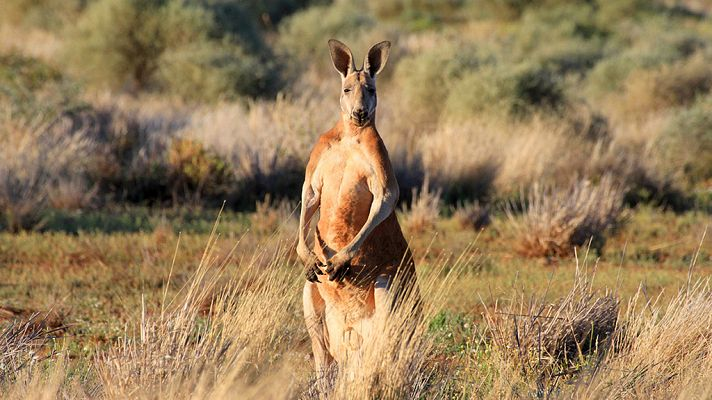
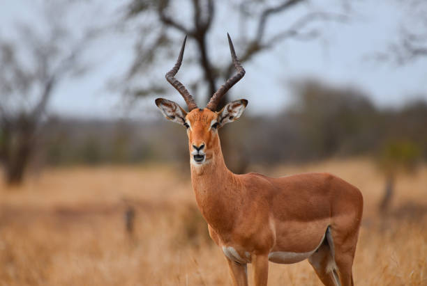
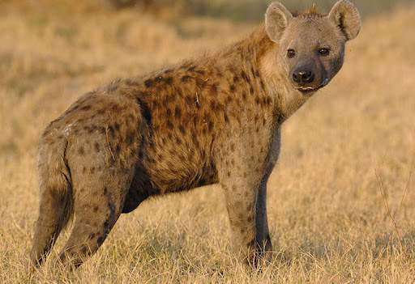
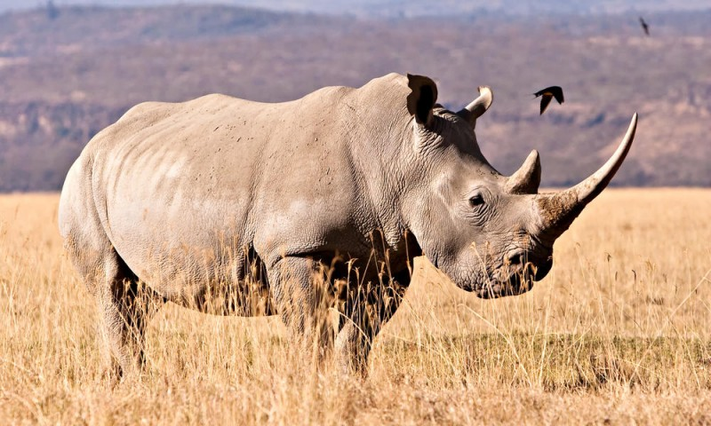
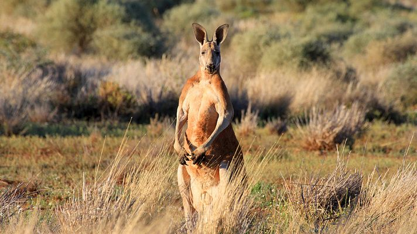
🐘 Fauna
La sabana es rica en biodiversidad y alberga grandes herbívoros y depredadores. Algunos animales característicos son: África: leones, elefantes, jirafas, cebras, antílopes, hienas, rinocerontes. Sudamérica: jaguares, armadillos, osos hormigueros, venados, serpientes. Australia: canguros, emúes, dingos, reptiles y aves endémicas.
Adaptaciones al clima:
Muchos animales tienen patas largas o alas para recorrer grandes distancias en busca de alimento y agua, especialmente durante la estación seca. Algunos mamíferos construyen madrigueras para refugiarse del calor, mientras que otros pierden calor a través de sus grandes orejas, como los elefantes.
Adaptaciones al alimento
Los herbívoros de la sabana han desarrollado hábitos alimenticios diversos para evitar la competencia directa, mientras que los depredadores se han adaptado a cazar presas específicas.
🌿 Flora
La vegetación de las sabanas está adaptada a largos periodos de sequía y fuego natural. Predominan: Gramíneas: como el pasto elefante o el pasto sabanero. Árboles dispersos: como la acacia y el baobab (en África), el curatella (en Sudamérica) o el eucalipto (en Australia). Muchas plantas tienen raíces profundas o cortezas gruesas para resistir la sequía y los incendios.
 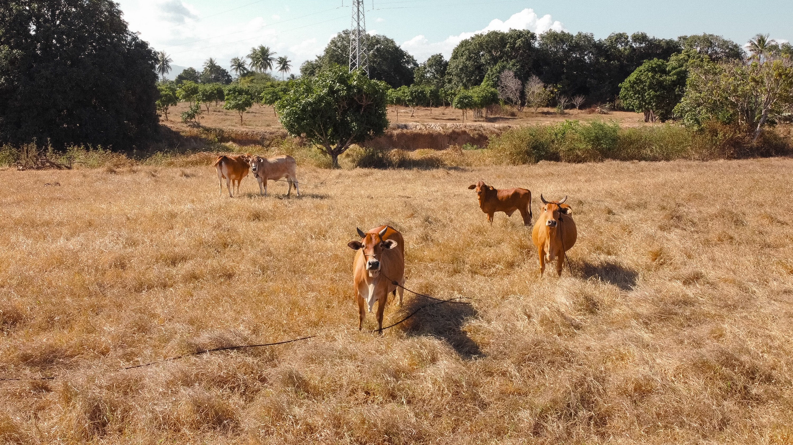
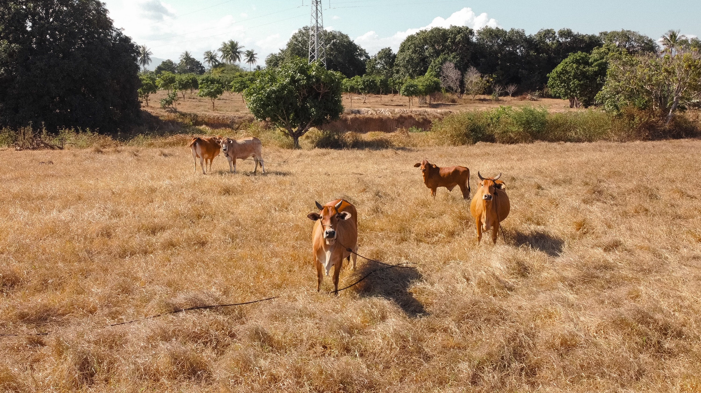